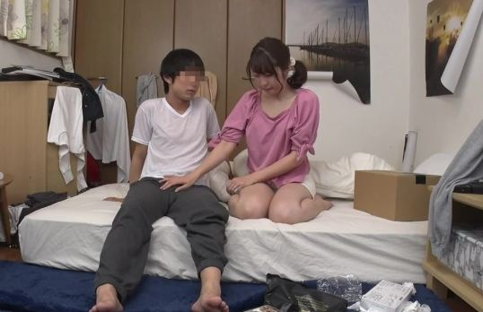

Dạo gần đây tôi thấy con cặc dài 17 phân của mình thường xuyên căng cứng không tự chủ được như lâu lâu lại mắng tôi nhưng tôi chỉ biết nói xin lỗi nó. Vào một buổi chiều thứ Năm. Vừa đi làm ngoài về, mồ hôi nhễ nhại nên vào nhà tắm rửa sạch người.
Khi dòng nước ấm trên người chảy ra, cảm giác thoải mái nhắc nhở tâm trí tôi về kinh nghiệm trong quá khứ, dương vật bất giác đứng lên! Tuy rằng dương vật rất căng tức, nhưng tôi cũng không có ý định cho bắn tinh, đợi đến tối đi ngủ mới hưởng thụ khoái cảm. Sau khi tắm rửa lau người một lúc, tôi bước về phòng mà không mặc quần áo, bố tôi rời nhà đi công tác và mẹ tôi chắc vẫn đang trên đường về nhà, tôi nghĩ ở nhà chẳng còn gì cả! Về phòng mà không mặc quần áo. Khi tôi bước ra khỏi phòng tắm và bước vào phòng khách, Chúa ơi! Tôi thấy mẹ tôi đang ở trước mặt tôi!

Tôi thực sự sửng sốt, mẹ tôi há hốc mồm nhìn con trai trần chuống! Cả hai chúng tôi đều sững sờ ở đó trong khi mắt mẹ đang nhìn chằm chằm vào con cặc của tôi. Mẹ tôi đã bình tĩnh lại sớm hơn tôi, lại gần hôn lên má tôi và nói hôm nay mẹ mệt quá nên đi tắm nước nóng cho thoải mái. Thực sự tôi rất ngưỡng mộ mẹ, dù đã 40 tuổi nhưng bà vẫn giữ được thân hình không thua các cô gái trẻ nhờ thể dục nhịp điệu và lối sống năng động. Mặc dù nàng chưa bao giờ mặc bất kỳ bộ quần áo gợi cảm nào, nhưng những bộ đồ phụ nữ được thiết kế riêng để tôn lên những đường cong tuyệt đẹp của nàng! Mẹ ơi, mẹ có một đôi mắt nâu tuyệt đẹp, gò má cao và đôi môi dày gợi cảm, toàn thân toát lên vẻ quyến rũ trưởng thành.
Từ lâu, mỗi khi thủ dâm trên giường, tôi thường nghĩ đến mẹ như một đối tượng trong tưởng tượng tình dục của mình. Lúc này tôi trở về phòng và ngồi trên giường suy nghĩ, chắc mẹ chỉ nhìn chằm chằm vào con cặc của tôi. “Mẹ, mẹ có ham muốn với con không?” Sau một hồi suy nghĩ , cuối cùng mẹ cũng tìm ra cách để kiểm tra con. Tôi mặc một chiếc quần đùi và đi vào bếp và rót một ly rượu yêu thích của bà cho mẹ tôi trong phòng tắm. Vừa đi đến cửa phòng tắm, liền nghe thấy tiếng nước ngừng lại, cửa phòng tắm chỉ còn trống không, liền cầm rượu bước vào. Mẹ tôi đang nhắm mắt và nằm ung dung trong bồn tắm ngâm mình. Tôi quan sát mẹ và nói:
– “Mẹ nghĩ mẹ có thể cần một ly rượu để giúp mẹ thư giãn.”
Mẹ ngạc nhiên khi nghe thấy giọng tôi, và mắt bà mở ra ngay lập tức. Mặc dù rất ngạc nhiên nhưng mẹ không giỏi bằng tôi. Nghiêm túc như trong tưởng tượng, tôi thầm nghĩ: “Khởi đầu tốt quá!” Tôi nhún vai cười nói:
– Vừa rồi mẹ nhìn thấy con khỏa thân, vậy thì công bằng mà con cũng phải nhìn mẹ!”
Mẹ cười nói:
“Con trai à, mẹ nghĩ con nói đúng!”
Cứ tưởng mẹ sẽ không đồng ý tôi không ngờ mẹ tôi hứa sẽ vui đến mức ngây ngất! Tăng gấp đôi can đảm của tôi. Không đợi nàng nói, tôi kéo một chiếc ghế đẩu lại gần bồn tấm, ngồi xuống và bắt đầu nhẹ nhàng xoa bóp vai nàng. Mẹ rên rỉ một cách thoải mái sau màn xoa bóp, trong khi mắt tôi khám phá cơ thể nàng một cách thèm khát. Oh! Thật sự khiến tim tôi đập dữ dội, không ngờ thân hình của một phụ nữ tuổi 40 lại hấp dẫn và xinh đẹp đến thế! Mái tóc nâu xinh đẹp của nàng được kẹp vào đầu cho phép tôi dễ dàng chạm vào bờ vai mềm mại của nàng và cũng cho phép tôi nhìn thấy bộ ngực đầy đặn và vùng kín bí ẩn trên mặt nước mà không bị cản trở. Lông mu của mẹ không nhiều và được cắt tỉa gọn gàng, chắc là cắt tỉa để mặc bikini.
Mẹ có vẻ rất thích cách xoa bóp của tôi, trong lúc trò chuyện, tôi quyết định thử thêm một chút nữa, tôi cúi xuống hôn nhẹ lên gáy và cổ mẹ rồi thổi nhẹ nhẹ vào tai mẹ, mẹ rùng mình quay nhìn tôi. Tôi thấy núm vú của nàng săn lại vì phấn khích! Tôi nghĩ mình đã khơi dậy thành công ham muốn tình dục của mẹ. Mẹ tôi quay mặt về phía tôi, lúc này tôi hôn lên đôi môi gợi cảm của mẹ một cách hấp tấp, tôi hôn mẹ một cách dịu dàng và nàng đã đáp lại một cách nhiệt tình! Sau đó cô nghe thấy một tiếng thở dài khe khẽ:
– “Mẹ nghĩ chúng ta làm điều này là sai… nhưng bây giờ nó đã xảy ra… mẹ không muốn kết thúc như thế này, vì vậy hãy thử từ từ!”
Sau khi nghĩ về quyền của mẹ tôi, và tôi không muốn mất tất cả những gì chúng tôi đã có, tôi tôn trọng quyết định của mẹ tôi. Tôi hỏi:
– “Mẹ, mẹ gợi ý gì?”
Mẹ tôi đáp:
– “Bây giờ chúng ta hãy xem nhau thủ dâm để đạt cực khoái. Rồi ngày mai tính tiếp chuyện khác nhé!”
Mẹ nói vậy tôi tuy hơi thất vọng nhưng vẫn chấp nhận lời đề nghị của mẹ, cởi quần đùi của tôi và ngồi bên bồn tắm, ngâm chân vào nước, lúc này mẹ cũng thả hai đầu gối lên khỏi mặt nước và từ từ dang hai chân ra, lúc này tôi mới cảm nhận được sự mềm mại của mẹ. Chân tôi chạm vào mặt trong của hai đùi nàng trong bồn tắm. Ngay lúc tôi chạm vào làn da của mẹ, cảm giác như bị điện giật kích thích mạnh mẽ thần kinh của tôi! Khi mẹ tôi âu yếm nhìn tôi, tôi bắt đầu sàm sỡ mình bằng tay. Lúc này, mẹ tôi theo đó vuốt ve cơ thể nàng, cơ thể tôi bất giác vặn vẹo vì hưng phấn. Mẹ con chúng tôi ở trước mặt nhau, tự vuốt ve mình một cách điên cuồng. Sự kích thích bất thường khiến tôi hưng phấn đến tột cùng, nhưng vẫn chống cự không để mình kết thúc quá sớm.
[IMG]
Vì vậy tôi giảm tốc độ sục cặc mình và tập trung theo dõi những động tác dâm đãng của mẹ. Hơi thở của mẹ bắt đầu trở nên gấp gáp, và sự kích thích của cơn cực khoái khiến nàng ưỡn mông lên khỏi mặt nước, và vì thế mà hai chân nàng gần tôi hơn và thỉnh thoảng chúng cọ vào bìu của tôi do chuyển động của cơ thể.
Không lâu sau mẹ tôi cuối cùng cũng đến cực khoái, cả người không ngừng co giật vì kích thích của cơn cực khoái, người từ từ chìm xuống nước bồn tắm khi cơn sướng dần rút lại. Với sự theo dõi quátrình đạt cực khoái của mẹ tôi, tôi không thể kìm hãm, sục nhanh mạnh và xuất hiện một giòng tinh trùng đặc sệt bắn ra ngoài! Những dòng tinh trùng bắn ra vãi tung tóe trên mặt người mẹ, tinh dịch chảy dọc theo má mẹ xuống bầu vú và một ít tinh dịch đọng lại nơi khóe miệng, mẹ vươn lưỡi liếm từng cái một.
Cơn chóng mặt ngắn ngủi sau khi xuất tinh gần như khiến tôi rơi xuống bồn tắm. Sau một lúc nghỉ ngơi, tôi đứng dậy rời khỏi bồn tắm và hôn lên má ửng hồng của mẹ mình. Tôi thầm nghĩ, hiện tại vị chí mình ở trong lòng mẹ, chắc hẳn mình đã có chỗ đứng rồi!
Rời khỏi phòng tắm trở về phòng, cảm giác mệt mỏi xâm chiếm cơ thể cùng với mấy tiếng sủa nữa ngủ ngoài nhà, lúc này đêm đã sâu… tỉnh dậy nhớ lại tất cả những cảm xúc của đêm qua, tôi không khỏi phấn khích lại nghĩ với: “Mẹ quả là con xấu hổ không dám đối mặt với mẹ, con phải làm sao dây?”
Vì vậy, tôi nhanh chóng đứng dậy đi tìm mẹ, cuối cùng cũng thấy mẹ đang ở trong bếp. Mẹ đang mặc một bộ đồ ngủ kiểu áo choàng và đang chuẩn bị bữa sáng. Mẹ nhìn thấy nụ cười ấm áp trên khuôn mặt tôi và nói:
– “Chào buổi sáng!”
Lúc này tâm trạng tôi mới thả lỏng. Sau khi đặt bữa sáng lên bàn ăn, mẹ ngồi xuống đối diện tôi và hỏi tôi:
– “Hôm nay con cảm thấy thế nào?”
Tôi nhìn mẹ và trả lời:
– “Được rồi! Mọi thứ thật tuyệt!”
Tôi cũng hỏi mẹ:
– “Vậy còn mẹ… và những gì mẹ nói hôm qua…”
Mẹ ngập ngừng một lúc và nói:
– “Mẹ cần suy nghĩ về điều này và mẹ sẽ cho con biết khi con đi làm về.”
Tôi lái xe ra ngoài, và tôi luôn cảm thấy rằng ngày hôm nay sẽ không kết thúc khi tôi đang làm việc, và tôi lo lắng cả ngày và không thể tập trung vào công việc. Cuối cùng cũng đến lúc tan sở, dọn dẹp và về nhà nhanh nhất có thể.
Lúc này tôi vừa lo sợ vừa mừng, đến gần cửa lại không dám đi vào ngay, không biết rốt cuộc sẽ ra sao? Tôi hy vọng mẹ có thể chấp nhận tôi. Do dự một lúc, tôi mở cửa bước vào nhà, mẹ đang ở trong phòng ăn, nhưng cảnh tượng trước mắt khiến tôi ngạc nhiên. Trên bàn ăn là bộ đồ ăn bằng sứ và đồ trang sức pha lê yêu thích của mẹ tôi. Và có hai cây cột cao trên bàn ăn, và những ngọn nến lãng mạn thay thế thiết bị chiếu sáng ban đầu.
Mẹ tôi bước vào phòng lúc này, và chiếc váy của bà làm tôi sáng mắt ra! Nàng mặc một chiếc váy dạ hội nhung màu đỏ, chiếc váy hoàn toàn tôn lên những đường cong của cơ thể, chiếc cổ khoét sâu khiến bộ ngực tuyệt đẹp của cô như sắp nhảy ra ngoài. Tôi ngạc nhiên hỏi mẹ:
– “Mẹ… mẹ đi đâu vậy!”
Mẹ nhẹ nhàng trả lời:
– “Hôm nay là một ngày rất đặc biệt, một ngày đáng để kỷ niệm.”
Mẹ gật đầu một cái ra hiệu cho tôi ra ghế để ngồi xuống, khi tôi ngồi thì mẹ nhẹ nhàng đặt tay lên vai tôi với giọng nói gợi cảm bên tai tôi nói:
– “Hôm nay là ngày đặc biệt nhất, mẹ sẽ ở bên con trai yêu quý của mẹ cùng nhau đi Vũ Sơn.”
Mẹ tôi nói xong liền ngồi xuống. Câu nói của mẹ khiến cả người tôi rung lên như một làn sóng xung kích. Tôi bỗng cảm thấy máu sôi khắp người! Mặc dù bữa tối này rất phong phú nhưng lúc này lòng tôi không còn trên bàn ăn nữa, mẹ tôi lại giả vờ như không biết tôi thèm ăn gì. Cuối cùng thì bữa tối cũng kết thúc, tôi cảm ơn nàng đã chuẩn bị bữa tối tuyệt vời này cho tôi. Tôi bước đến cầm tay mẹ nói mẹ đứng dậy, tôi ôm mẹ hôn nhẹ nhàng, hai tay sờ lưng, cuối cùng dùng tay bóp nhẹ vào mông mẹ. Tay tôi đưa tôi vào phòng ngủ của nàng.
Trong phòng, tôi mở khóa quần áo của mẹ và trao cho mẹ một nụ hôn kiểu Pháp, khi tôi đưa lưỡi vào miệng mẹ, mẹ tôi không kìm được mà rên lên. Tôi từ từ cởi bỏ quần áo của mẹ đã nới lỏng rồi tuột chúng xuống đất, lúc này trên người mẹ chỉ còn lại chiếc áo lót và quần lót gợi cảm màu đen, tôi nhanh chóng cởi bỏ quần áo của mình để mẹ nằm xuống trên giường. Tôi hôn mẹ một cách say mê, và cọ sát đùi vào âm hộ mẹ. Cơ thể của mẹ bắt đầu vặn vẹo và vặn vẹo, và tôi biết bây giờ tôi đang có một sự trải nghiệm đáng kinh ngạc. Trong khi hôn, tôi bắt đầu dùng tay mơn trớn cơ thể mẹ, đưa tay xoa nhẹ hai bầu vú mỏng manh qua lớp áo lót. Tôi hôn khắp cơ thể mẹ, không buông tha bầu ngực, vùng bụng phẳng lì… cuối cùng hôn đến tận nơi bí ẩn mẹ vặn vẹo dữ dội, tôi biết mình không thể đợi thêm được nữa.
Tôi kéo đôi chân thon thả của mẹ xuống và kéo chiếc quần lót của mẹ xuống, cái âm hộ xinh đẹp mà tôi thấy hôm qua lại hiện ra. Bộ phận sinh dục của mẹ đã căng tràn, và tôi nóng lòng muốn được nếm nước ngọt của mẹ vào lúc này! Tôi vùi mặt vào háng mẹ rồi dùng lưỡi liếm chầm chậm hai môi âm hộ rồi đẩy dần tốc độ liếm, mẹ phản ứng càng lúc càng dữ dội với động tác của tôi nên tôi càng làm mạnh hơn. Mẹ đưa tay xoa đầu tôi một cách yếu ớt, miệng lâu lâu lại hét lên đầy phấn khích:
– “Trời ơi… con ơi… mẹ sướng quá… mau lên… con đút lưỡi sâu vào lồn mẹ… nhanh lên…”
Mẹ ưỡn thẳng hông lên, để lưỡi tôi xâm nhập vào trong lồn của mẹ sâu hơn. Đúng lúc này, mẹ ban thưởng phong phú, một dòng chất lỏng đầy mùi xạ hương rót vào miệng tôi đã chờ đợi từ lâu, tôi ra sức hút hết chất nước của nàng ban cho vào miệng và nuốt xuống bụng! Cơ thể mẹ co giật hồi lâu mẹ mới bình tĩnh lại. Sau khi mẹ hồi phục, tôi leo lên bên mẹ và ôm mẹ thật dịu dàng. Lúc này hơi thở của mẹ đã ổn định và mẹ nói:
– “Con lên đi… để mẹ phục vụ con luôn!”
Tôi thích thú di chuyển con cặc đang nhói lên sát mẹ. Mẹ mỉm cười bảo:
– “Con có chắc là con rất muốn làm điều này không?”
Tôi ngồi nằm trên giường, bà bò lên và quỳ xuống giữa hai chân tôi, há miệng và nuốt trọn con cặc của tôi. Cảm giác ấm áp tràn ngập khắp cơ thể tôi. Tôi không thể kìm được tiếng rên rỉ thoát ra từ miệng, người đã không thử oral sex. Sự phấn khích lúc này khiến tôi như đang bồng bềnh. Môi mẹ ngậm chặt lấy con cặc của tôi mà mút mạnh, còn cái lưỡi thì ngoáy qua ngoáy lại, hàm răng cắn nhẹ lấy quy đầu, dưới sự kích thích liên tục, con cặc của tôi đã sẵn sàng để bắn tinh! Nàng nhìn tôi thở hổn hển và nói:
– “Con muốn mẹ nuốt hết tinh dịch hay con muốn xem nó lan ra khắp cơ thể mẹ như thế nào?”
– “Con muốn xem chúng lan ra khắp cơ thể mẹ như thế nào, nhưng con muốn thấy mẹ nuốt nó nhiều hơn nữa. Lấy tinh dịch của con!”
Mẹ đặt con cặc của tôi vào giữa hai vú và dùng lòng bàn tay ấn vào hai bầu vú của mẹ và bắt đầu xoa nắn con cặc của tôi đã gần như xuất tinh. Ngoài xoa xoa con cặc của tôi với cái bầu vú thì mẹ tôi còn cúi đầu xuống và đưa chiếc lưỡi thơm tho của mình ra mà liếm vào quy đầu của tôi. Đùi tôi bắt đầu co giật một cách bất đắc dĩ, và tôi cảm thấy con cặc trong miệng mẹ tôi đã sẵn sàng để ra. Đột nhiên, một cảm giác nhột nhạt xông thẳng từ đốt sống đuôi vào trán, và một loạt tinh dịch nóng hổi đột nhiên trào ra! Mẹ mở miệng chào đón tinh trùng nóng bỏng đầu tiên của tôi bắn ra. Nàng nhìn tôi bằng đôi mắt của mình, mỉm cười và nuốt nó, trong khi dòng tinh trùng tiếp theo liên tục xuất ra bắn tung tóe khắp nơi, và ngực, má và vai mẹ dính đầy dịch nóng của tôi.
Mẹ nhìn dâm quá, mẹ đút con cặc vẫn còn co dật vào miệng liếm sạch tinh dịch trên con cặc. Khi liếm thì nàng cố tình há miệng ra để tôi nhìn thấy tinh trùng dính vào lưỡi, rồi ngấu nghiến nuốt vào. Sau khi nghỉ ngơi, dương vật đã mềm ra, vì vậy tôi lại gần mẹ. Khuôn mặt mẹ đầy ngạc nhiên và vui mừng, ngạc nhiên vì tôi sắp bắt đầu lại sớm như vậy. Tôi cởi cúc áo ngực đen của mẹ, và dùng lưỡi nghịch ngợm hai núm vú căng mọng nước của mẹ, tôi đưa tay xuống bụng dưới của mẹ và dùng ngón tay chơi đùa với âm hộ dâm đãng của mẹ.
Mẹ cũng sử dụng bàn tay để chơi đùa với con cặc của tôi, hy vọng nó sẽ sớm lấy lại được vinh quang, và con cặc của tôi sẽ sớm đứng lên trở lại sau những lần chăm chỉ của mẹ. Mẹ tôi cười nói:
– “Quả nhiên là thanh niên, sức của con hồi phục nhanh quá!”
Lúc này, mẹ tôi dùng hai chân bao quanh mông tôi, xoa xoa con cặc của tôi rồi nói giọng van xin:
– “Đụ mẹ đi con ơi… con ngoan của mẹ… đụ mẹ đi… lấp đầy lỗ lồn của mẹ với con cặc nóng hổi của con đi!”
[IMG]
[IMG]
Sau 5 phút mơn trớn, tôi bắt đầu thực hiện điều mà tôi mơ ước. Lấp đầy hoàn toàn cái lỗ lồn tôi mong chờ bấy lâu nay! Mẹ vòng tay qua lưng tôi ôm chặt lấy tôi di chuyển eo đẩy dương vật vào sâu trong cơ thể mẹ, mẹ cũng di chuyển mông lên xuống làm cho phần dưới của chúng tôi căng lên từng hồi. Mẹ cứ hít hà rên rỉ:
– “Mạnh… ơi… mạnh… con… quan trọng hơn là… ôi… con ơi… con làm mẹ sướng quá… nhanh đi… con cố gắng lên nữa đi… nhanh… dùng con cặc to lớn của con để giết mẹ!”
Mẹ tiếp tục đạt cực khoái nhiều lần, và cả hai chúng tôi hoàn toàn sụp đổ cùng một lúc khi mẹ đạt cực khoái thứ tư! Sau khi giao hợp mãnh liệt, tôi dựa vào người mẹ, lúc này tôi cảm thấy chất lỏng sền sệt trên ngực mẹ, tôi đứng dậy vào nhà vệ sinh và lấy khăn ướt, khi trở lại phòng, tôi đã nhìn thấy một khung cảnh lạ thường! Mẹ đang mệt mỏi nhắm mắt ngủ mê man và dòng tinh trùng trắng đục của mình từ từ chảy ra khỏi lỗ lồn của mẹ. Vậy là tôi quay lại giường và nhẹ nhàng lau người cho mẹ, khi tôi lau thì mẹ rên nhẹ và chúng tôi ôm nhau và chìm vào giấc ngủ một cách trìu mến.
Chúng tôi thức dậy vào buổi sáng và đi vào phòng tắm để tắm. Tôi nhìn lồn mẹ đang căng phồng lên thành một búi hơi nhỏ. Mẹ tôi nhìn tôi cười ngốc nghếch, bẽn lẽn nói:
– “Lần sau con đợi bố của con đi công tác xa lần nữa, mẹ cho con chơi với hậu môn của mẹ! Được rồi. Anh trai lớn của tôi…”
Tôi thực sự phấn khích khi nghe những gì mẹ tôi nói. Tôi chưa đợi mẹ nói xong. Tôi lại đút con cặc vốn đã căng mọng của mình vào cái lồn đang sưng tấy của mẹ cho bữa điểm tâm sáng…
Mọi người cứ chờ nhé, đợi khi nào bố tôi đi công tác thì tôi sẽ kể tiếp.
Hết Truyện Thứ Nhất…
Đón đọc truyện tiếp theo.